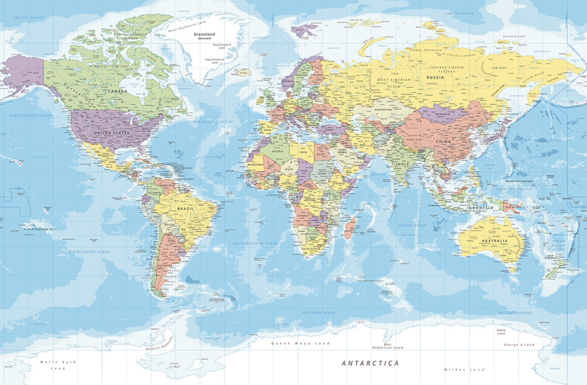

La colazione serve a tutti noi per iniziare con la giusta carica la giornata, ma non tutti mangiano o bevono le stesse cose durante il rito del primo pasto quotidiano. Se le differenze si possono notare già nella stessa Nazione, figuriamoci quelle tra i vari Paesi del mondo! La colazione, infatti, si svolge in maniera diversa in ogni parte del pianeta. Ogni località mette in tavola alimenti differenti, alcuni dei quali ci possono sembrare pure molto strani o quantomeno parecchio dissimili da quelli che abitualmente consumiamo la mattina.
A- B - C - D - E - F - G - H - I - J - K - L - M - N - O - P - Q - R - S - T - U - V - W - X - Y - Z
ITALIA

La più classica delle colazioni consiste in una bevanda calda - caffè, tè, oppure cappuccino - accompagnata da una brioche oppure dei biscotti. Esistono in realtà molte varianti: c'è chi preferisce, soprattutto i più piccoli, una tazza di latte tiepido, dove magari tuffare dei cereali, oppure chi mangia un tramezzino al posto del cornetto.
INGHILTERRA

Nel piatto completo che costituisce la classica colazione inglese non devono mancare fagioli, salsiccia, bacon (pancetta fritta), uova, funghi, hash browns (frittelle di patate) e pane tostato. Il tutto è accompagnato da una fumante tazza di tè, con l'aggiunta opzionale di black pudding, una specie di salsiccia fatta con sangue di maiale.
SVEZIA

La colazione svedese comprende un tipico pancake chiamato Pannkakor, molto sottile in quanto non contiene lievito, accompagnato da marmellate di diverso tipo.
SPAGNA

Semplice quanto volete, ma il pane alla Catalana o pane col pomodoro è una delizia. Basta strofinare aglio fresco e pomodoro maturo sul pane, aggiungere olio extra vergine e sale e il gioco è fatto. Formaggio, prosciutto o salsiccia facoltativi.